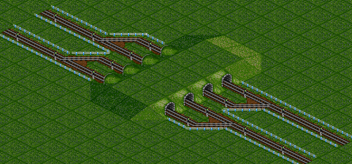
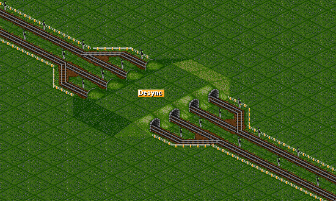
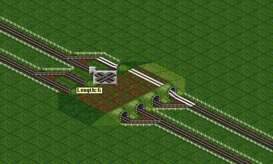
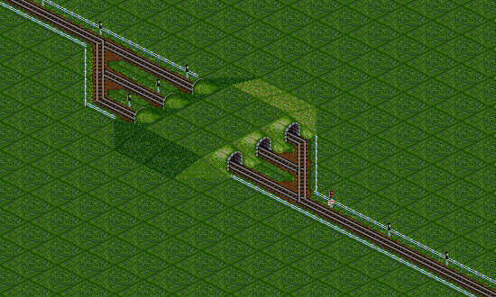
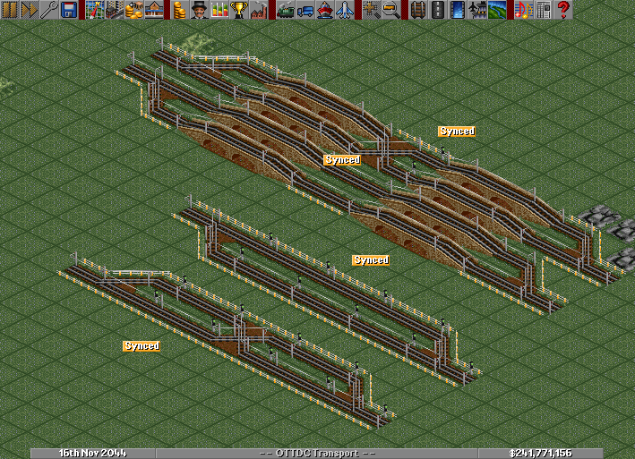

Line sync
Contents
Definition
Line sync, or sync for short, is a term used in coop games when splitting a line (in most cases, a mainline). The split lines are "in sync" if they are the same length, and "out of sync" if one is shorter than the other.
Sync is especially important on dense networks (lots of trains on the same line) to ensure that the line continues to flow at maximum speed without interruption.
Lines that are in sync will typically shift one or more tiles (N-1, where N is the number of routes from before the shift to the end of the shift).
Seeing the Difference
Below are two screenshots. One contains lines that are "in sync", and the other contains lines that are "out of sync".




Checking Line Sync
The easiest way to check line sync is to use OpenTTD's measuring tool. Starting at the split, count the number of straight tracks on each route until the lines merge again. Also count the number of diagonal tracks. If all routes have the same number of straight tracks and the same number of diagonal tracks, the lines are in sync. Due to the difference in length between a straight and diagonal track, it is not always safe to assume that two diagonal tracks count as one straight track (especially on very dense networks).


Multi-line Sync
In cases where more than 2 tracks must be sync'd, it is often helpful to remember that trains should enter and leave the set of tracks from alternate corners of the bounding rectangle. If they enter from the southwest, they should all leave via the northeast corner.


Synchronized corners
When synchronizing tracks that go around corners, take special care to count the diagonal tracks. In some cases, it may be impossible to create an accurate sync.

X-Sync
Below is a special sync case. It uses an X crossing between two split tracks to maintain line sync. Note that while an evil-X is typically frowned upon, this case is ok because both tracks should not be in use at the same time (because trains came from the same original track).


See Also
Categories: Pages with broken file linksGuidesBasic networking